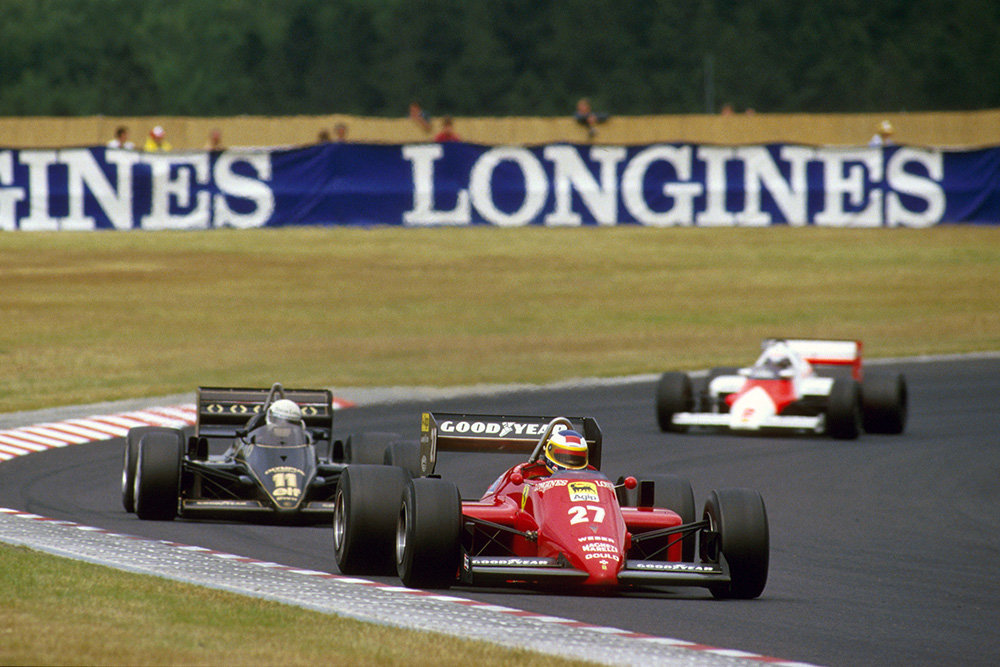
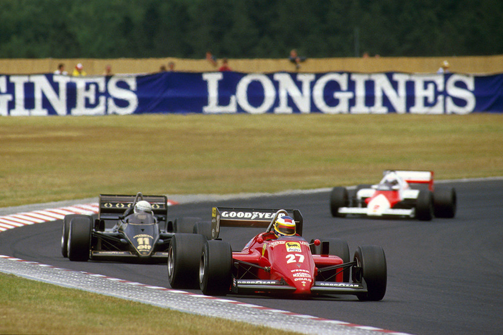

Michele didn't win as much as he deserved.
5 Victories in Formula 1, the European Formula 3 Championship,
and especially the 24 Hours of Le
Mans in 1997, were the Highlights of his Career
The best
year in Formula 1 was in the 1985 World Championship. When he was in the lead for most of the season, he had
to retire 4 times in the last 5 Races for Engine and Turbo failures
The 1985 German Grand Prix was a Formula One motor race held at Nürburgring on 4 August 1985. It was the ninth race of the 1985 Formula One season. This was the first German Grand Prix that was held on the new GP-Strecke section of the track that replaced the old Südschleife section that had not been used since 1970. It was also the first time in nine years the German GP was held at Nürburgring; previously the German GP was held on the dangerous and very long Nordschleife section of the track up until 1976, and at that race Niki Lauda had a near-fatal accident in his Ferrari that forced the Formula One circus to move to the safer, shorter and faster Hockenheimring. Michele Alboreto won the race, his fifth and last F1 victory. This event was the first occasion on which an onboard camera was used in a race; one was attached to François Hesnault's Renault. That car was not eligible for championship points, and this race marked the last time, as of the 2017 season, that an F1 team entered three cars for a race.
In qualifying, Fabi's Toleman wins the pole position, followed by Johansson and Prost. The race seems favorable to Prost, on paper, because Alboreto even starts from the fourth row. Fabi starts badly, getting overtaken by Rosberg and Senna, as well as by the two Ferraris. Alboreto, however, guesses the shot and recovers 5 positions after the first corner. The first duel is between Rosberg and Senna, who are competing for the leadership, which is resolved in favor of the Finnish, who is in the lead for a long time. Behind, Alboreto chases and in the fight forces Johansson to enter the pits to replace the nose.
Everything proceeds regularly until the first pit-stop, with Senna taking advantage of it to overcome Rosberg, but the Brazilian is afflicted by problems with the gearbox and must retire. Several other drivers will follow, including Fabi, De Angelis, and Piquet. Rosberg, then, continues chased by Alboreto, who among the general surprise managed to take second place.
At 48. lap the twist: the Finn is overtaken by the Italian and not only by him but also by Prost, Laffite, and Mansell, who engage a long and passionate duel lasted 9 laps, with overtaking and counter-steps. Rosberg will not finish the race, while Mansell will be the victim of a problem with the turbo and will have to tag Lauda and the surprising Boutsen with Arrows. For Ferrari, the victory of Alboreto will be a great redemption, 9 years after the drama that has upset the world of Formula 1 on the Nordschleife;
1st Michele Alboreto-(Ferrari)
2st Alain Prost-(McLaren-TAG)
3rd Jacques Laffitte(Ligier-Renault)
Teo Fabi-(Toleman-Hart) Time 1:17.429
Niki Lauda-(McLaren-TAG) Time: 1:22.806 on lap 53


1
Teo Fabi
(Toleman-Hart)
2
Stefan Johansson
(Ferrari)
3
Alain Prost
(Mclaren TAG)
4
Keke Rosberg
(Williams-Honda)
5
Ayrton Senna
(Lotus Renault)
6
Nelson Piquet
(Brabham-BMW)
 

{kind=link}
{kind=link}
{kind=link}
{kind=link}
{kind=link}
{kind=link}
{kind=link}